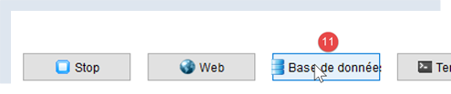
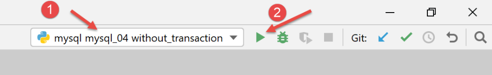

16. استخدام نظام إدارة قواعد البيانات MySQL

16.1. تثبيت نظام إدارة قواعد البيانات MySQL
لاستخدام نظام إدارة قواعد البيانات MySQL، سنقوم بتثبيت برنامج Laragon.
16.1.1. تثبيت Laragon
Laragon هو حزمة تجمع بين عدة مكونات برمجية:
- خادم ويب Apache. سنستخدمه لكتابة نصوص برمجية للويب بلغة Python؛
- نظام إدارة قواعد البيانات MySQL؛
- لغة البرمجة النصية PHP، والتي لن نستخدمها؛
- خادم Redis الذي ينفذ ذاكرة تخزين مؤقتة لتطبيقات الويب. لن نستخدمه؛
يمكن تنزيل Laragon (فبراير 2020) من العنوان التالي:


- ينتج عن التثبيت [1-5] هيكل الدليل التالي:

- في [6] مجلد تثبيت PHP (غير مستخدم في هذا المستند)؛
يؤدي تشغيل [Laragon] إلى عرض النافذة التالية:

- [1]: القائمة الرئيسية لـ Laragon؛
- [2]: زر [Start All] (تشغيل الكل) يقوم بتشغيل خادم الويب Apache وقاعدة بيانات MySQL؛
- [3]: يعرض زر [WEB] صفحة الويب [http://localhost]؛
- [4]: يتيح لك زر [Database] إدارة نظام إدارة قاعدة بيانات MySQL باستخدام أداة [phpMyAdmin]. يجب تثبيت هذه الأداة مسبقًا؛
- [5]: يفتح زر [Terminal] محطة أوامر؛
- [6]: يفتح زر [Root] نافذة Windows Explorer في المجلد [<laragon>/www]، وهو الدليل الجذر لموقع الويب [http://localhost]. هذا هو المكان الذي يجب أن تضع فيه تطبيقات الويب الثابتة التي يديرها خادم Apache الخاص بـ Laragon؛
16.1.2. إنشاء قاعدة بيانات
سنوضح لك الآن كيفية إنشاء قاعدة بيانات ومستخدم MySQL باستخدام أداة Laragon.

- بمجرد تشغيله، يمكن إدارة Laragon [1] من خلال قائمة [2]؛
- في [3-5]، قم بتثبيت أداة إدارة MySQL [phpMyAdmin] إذا لم تكن مثبتة بالفعل؛

- في [6]، قم بتشغيل خادم الويب Apache ونظام إدارة قاعدة البيانات MySQL؛
- في [7]، يتم تشغيل خادم Apache؛
- في [8]، يتم تشغيل نظام إدارة قاعدة البيانات MySQL؛

- في [8-10]، قم بإنشاء قاعدة بيانات باسم [dbpersonnes] [11]. سنقوم بإنشاء قاعدة بيانات للأشخاص؛

- في [11]، سنقوم بإدارة قاعدة البيانات التي أنشأناها للتو؛

- تُرسل عملية [قواعد البيانات] طلبًا عبر الويب إلى عنوان URL [http://localhost/phpmyadmin] [12]. ويستجيب خادم الويب Laragon Apache لهذا الطلب. عنوان URL [http://localhost/phpmyadmin] هو عنوان الأداة المساعدة [phpMyAdmin] التي قمنا بتثبيتها سابقًا [5]. تتيح لك هذه الأداة المساعدة إدارة قواعد بيانات MySQL؛
- بشكل افتراضي، بيانات تسجيل الدخول لمسؤول قاعدة البيانات هي: root [13] بدون كلمة مرور [14]؛

- في [16]، قاعدة البيانات التي أنشأناها سابقًا؛

- في الوقت الحالي، لدينا قاعدة بيانات [dbpersonnes] [17] فارغة [18]؛
نقوم بإنشاء مستخدم [admpersonnes] بكلمة مرور [nobody] سيكون له امتيازات كاملة على قاعدة البيانات [dbpersonnes]:

- في [19]، نحن موجودون في قاعدة البيانات [dbpersonnes]؛
- في [20]، نختار علامة التبويب [Privileges]؛
- في [21-22]، نرى أن المستخدم [root] يتمتع بامتيازات كاملة على قاعدة البيانات [dbpersonnes]؛
- في [23]، نقوم بإنشاء مستخدم جديد؛

- في [25-26]، سيكون اسم المستخدم [admdbpersonnes]؛
- في [27-29]، ستكون كلمة المرور [nobody]؛
- في [30]، يحذر phpMyAdmin من أن كلمة المرور ضعيفة جدًا (يسهل اختراقها). في بيئة الإنتاج، يفضل إنشاء كلمة مرور قوية باستخدام [31]؛
- في [32]، نحدد أن المستخدم [admdbpersonnes] يجب أن يتمتع بامتيازات كاملة على قاعدة البيانات [dbpersonnes]؛
- في [33]، نقوم بالتحقق من صحة المعلومات المقدمة؛

- في [35]، يشير phpMyAdmin إلى أنه تم إنشاء المستخدم؛
- في [36]، استعلام SQL الذي تم تنفيذه على قاعدة البيانات؛
- في [37]، يتمتع المستخدم [admpersonnes] بامتيازات كاملة على قاعدة البيانات [dbpersonnes]؛
الآن لدينا:
- قاعدة بيانات MySQL [dbpersonnes]؛
- مستخدم [admpersonnes/nobody] يتمتع بامتيازات كاملة على قاعدة البيانات هذه؛
16.2. تثبيت حزمة [mysql-connector-python]
سنكتب نصوص برمجية بلغة Python لاستخدام قاعدة البيانات التي تم إنشاؤها سابقًا بالبنية التالية:

يُستخدم الموصل لفصل كود Python عن نظام إدارة قواعد البيانات المستخدم. توجد موصلات لأنظمة إدارة قواعد البيانات المختلفة، وجميعها تتبع نفس الواجهة. لذا، عندما نستبدل نظام إدارة قواعد البيانات MySQL بنظام إدارة قواعد البيانات PostgreSQL في المثال أعلاه، تصبح البنية كما يلي:

نظرًا لأن جميع موصلات أنظمة إدارة قواعد البيانات تتبع نفس الواجهة، لا تحتاج عادةً إلى تعديل البرنامج النصي لـ Python. في الواقع، تستخدم معظم أنظمة إدارة قواعد البيانات لغة SQL خاصة بها:
- فهي تتوافق مع معيار SQL (لغة الاستعلام الهيكلية)؛
- ولكنها توسعه — نظرًا لأنه غير كافٍ بحد ذاته — بامتدادات لغة خاصة؛
لذلك، من الشائع أنه عند التبديل بين أنظمة إدارة قواعد البيانات (DBMS)، يجب إجراء تعديلات على لغة SQL في البرامج النصية.
بشكل افتراضي، لا توفر Python القدرة على إدارة قاعدة بيانات MySQL. للقيام بذلك، يجب عليك تنزيل حزمة. هناك العديد من الحزم المتاحة. هنا، سنستخدم حزمة [mysql-connector-python]، وهي الموصل الرسمي من Oracle، الشركة المالكة لـ MySQL.
سيتم تثبيت الحزمة في نافذة [Terminal] في Pycharm:

- الدليل الموجود في [2] غير ذي صلة بما يلي؛
في المحطة الطرفية، اكتب الأمر [pip search MySQL]:
- [pip] (مثبت الحزم لـ Python) هو الأداة المستخدمة لتثبيت حزم Python. تتصل أداة [pip] بالمستودع الذي يحتوي على حزم Python؛
- [search MySQL]: يسترد قائمة بالحزم التي تحتوي على المصطلح [MySQL] (بغض النظر عن حالة الأحرف) في أسمائها؛
نتائج الأمر هي كما يلي:
mysql (0.0.2) - Virtual package for MySQL-python
jx-mysql (3.49.20042) - jx-mysql - JSON Expressions for MySQL
weibo-mysql (0.1) - insert mysql
bits-mysql (1.0.3) - BITS MySQL
MySQL-python (1.2.5) - Python interface to MySQL
deployfish-mysql (0.2.13) - Deployfish MySQL plugin
mtstat-mysql (0.7.3.3) - MySQL Plugins for mtstat
bottle-mysql (0.3.1) - MySQL integration for Bottle.
WintxDriver-MySQL (2.0.0-1) - MySQL support for Wintx
py-mysql (1.0) - Operating Mysql for Python.
mysql-utilities (1.4.3) - MySQL Utilities 1.4.3 (part of MySQL Workbench Distribution 6.0.0)
…. - Tool to move slices of data from one MySQL store to another
mysql-tracer (2.0.2) - A MySQL client to run queries, write execution reports and export results
mysql-utils (0.0.2) - A simple MySQL library including a set of utility APIs for Python database programming
mysql-connector-repackaged (0.3.1) - MySQL driver written in Python
dffml-source-mysql (0.0.5) - DFFML Source for MySQL Protocol
mysql-connector-python (8.0.19) - MySQL driver written in Python
INSTALLED: 8.0.19 (latest)
prometheus-mysql-exporter (0.2.0) - MySQL query Prometheus exporter
backwork-backup-mysql (0.3.0) - Backwork plug-in for MySQL backups.
django-mysql-manager (0.1.4) - django-mysql-manager is a Django based management interface for MySQL users and databases.
…. - mysql operate
C:\Data\st-2020\dev\python\cours-2020\v-01>
تم سرد جميع الوحدات النمطية التي يحتوي اسمها أو وصفها على الكلمة الرئيسية MySQL. الوحدة التي سنستخدمها (فبراير 2020) هي [mysql-connector-python]، السطر 17. لتثبيتها، اكتب الأمر [pip install -U mysql-connector-python] في المحطة الطرفية:
C:\Data\st-2020\dev\python\cours-2020\v-01>pip install -U mysql-connector-python
Collecting mysql-connector-python
Using cached mysql_connector_python-8.0.19-py2.py3-none-any.whl (355 kB)
Requirement already satisfied, skipping upgrade: protobuf==3.6.1 in c:\myprograms\python38\lib\site-packages (from mysql-connector-python) (3.6.1)
Requirement already satisfied, skipping upgrade: dnspython==1.16.0 in c:\myprograms\python38\lib\site-packages (from mysql-connector-python) (1.16.0)
Requirement already satisfied, skipping upgrade: six>=1.9 in c:\users\serge\appdata\roaming\python\python38\site-packages (from protobuf==3.6.1->mysql-connector-python) (1.14.0)
Requirement already satisfied, skipping upgrade: setuptools in c:\myprograms\python38\lib\site-packages (from protobuf==3.6.1->mysql-connector-python) (41.2.0)
Installing collected packages: mysql-connector-python
Successfully installed mysql-connector-python-8.0.19
- السطر 1: يطلب الخيار [install -U] (U=ترقية) أحدث إصدار من الحزم المختلفة المرتبطة بحزمة [mysql-connector-python]؛
لمعرفة الحزم المثبتة في بيئة Python بجهازنا، اكتب الأمر [pip list]:
C:\Data\st-2020\dev\python\cours-2020\v-01>pip list
Package Version
---------------------- ----------
asgiref 3.2.3
astroid 2.3.3
atomicwrites 1.3.0
attrs 19.3.0
certifi 2019.11.28
…
MarkupSafe 1.1.1
mccabe 0.6.1
more-itertools 8.1.0
mysql-connector-python 8.0.19
mysqlclient 1.4.6
packaging 20.0
pip 20.0.1
pipenv 2018.11.26
…
- السطر 13: لدينا حزمة [mysql-connector-python]؛
لمعرفة كيفية استخدام حزمة [mysql-connector-python] لإدارة قاعدة بيانات MySQL، قم بزيارة موقع الحزمة |https://dev.mysql.com/doc/connector-python/en/|. يعرض القسم التالي سلسلة من الأمثلة.
16.3. البرنامج النصي [mysql_01]: الاتصال بقاعدة بيانات MySQL - 1
يوضح البرنامج النصي [mysql_01] الخطوة الأولى في استخدام قاعدة البيانات. سيسمح لنا ذلك بالتحقق من إمكانية الاتصال بقاعدة البيانات [dbpersonnes] التي تم إنشاؤها مسبقًا.
ملاحظات
- السطر 2: استيراد وظائف وفئات معينة من وحدة [mysql.connector]؛
- السطران 6 و7: بيانات اعتماد المستخدم الذي سيتصل؛
- السطر 8: الجهاز الذي يستضيف قاعدة البيانات. يتيح لك موصل MySQL العمل مع قاعدة بيانات بعيدة؛
- السطر 9: اسم قاعدة البيانات التي نريد الاتصال بها؛
- السطور 11-26: سيقوم البرنامج النصي (السطر 16) بتوصيل المستخدم [admpersonnes / nobody] بقاعدة البيانات [dbpersonnes]؛
- الأسطر 20–26: قد يفشل الاتصال. ولذلك، يتم التعامل معه ضمن كتلة try/except/finally؛
- السطر 16: تقبل طريقة connect في وحدة [mysq.connector] معلمات مسماة متنوعة:
- user: المستخدم الذي يمتلك الاتصال [admpersonnes]؛
- password: كلمة مرور المستخدم [nobody]؛
- host: جهاز نظام إدارة قواعد البيانات MySQL [localhost]؛
- database: قاعدة البيانات المراد الاتصال بها. اختياري.
- السطر 20: إذا تم إثارة استثناء، فسيكون من النوع [DatabaseError] أو [InterfaceError]؛
- الأسطر 23–26: في جملة [finally]، يتم إغلاق الاتصال؛
النتائج
16.4. البرنامج النصي [mysql_02]: الاتصال بقاعدة بيانات MySQL - 2
في هذا البرنامج النصي الجديد، يتم تغليف اتصال قاعدة البيانات في دالة:
ملاحظات:
- الأسطر 6–19: دالة [connection] تحاول توصيل المستخدم بقاعدة البيانات [dbpersonnes] ثم فصله عنها. تعرض النتيجة؛
- الأسطر 29–41: البرنامج الرئيسي – يستدعي طريقة الاتصال مرتين ويعرض أي استثناءات؛
النتائج
16.5. نص برمجي [mysql_03]: إنشاء جدول MySQL
الآن بعد أن عرفنا كيفية إنشاء اتصال بنظام إدارة قواعد البيانات MySQL، يمكننا البدء في إصدار أوامر SQL عبر هذا الاتصال. للقيام بذلك، سنقوم بالاتصال بقاعدة البيانات التي تم إنشاؤها [dbpersonnes] واستخدام الاتصال لإنشاء جدول في قاعدة البيانات.
ملاحظات:
- السطر 9: تقوم الدالة execute_sql بتنفيذ استعلام SQL على اتصال مفتوح؛
- السطر 14: يتم تنفيذ عمليات SQL على الاتصال من خلال كائن خاص يسمى المؤشر؛
- السطر 14: الحصول على المؤشر؛
- السطر 16: تنفيذ استعلام SQL؛
- الأسطر 17–20: سواء كان هناك خطأ أم لا، يتم إغلاق المؤشر. وهذا يحرر الموارد المرتبطة به. إذا حدث استثناء، فلن يتم التعامل معه هنا. سيتم تمريره إلى الكود المستدعي؛
- الأسطر 33-43: إنشاء اتصال بقاعدة البيانات؛
- السطر 38: تعيين AUTOCOMMIT=True للاتصال يعني أن كل عملية تنفيذ استعلام تتم ضمن معاملة تلقائية. الوضع الافتراضي هو AUTOCOMMIT=False، حيث يكون المطور مسؤولاً عن إدارة المعاملات. المعاملة هي آلية تشمل تنفيذ استعلامات متعددة، من 1 إلى n. إما أن تنجح جميعها، أو لا ينجح أي منها. وبالتالي، إذا نجحت الاستعلامات من 1 إلى i ولكن فشل الاستعلام i+1، فسيتم "التراجع" عن الاستعلامات من 1 إلى i بحيث تعود قاعدة البيانات إلى الحالة التي كانت عليها قبل تنفيذ الاستعلام 1؛
- هنا، يوجد استعلامان SQL (السطران 49 و58). سيتم تنفيذ كل منهما ضمن معاملة. لا يؤثر فشل الاستعلام الثاني على الأول؛
- الأسطر 45–51: يتم تنفيذ عبارة SQL [drop table people]. وهي تحذف الجدول المسمى [people]. إذا كان الجدول غير موجود، فقد يتم الإبلاغ عن خطأ. يتم تجاهل هذا الخطأ (السطر 51)؛
- الأسطر 53-55: الأمر لإنشاء الجدول [people]. يمكن النظر إلى الجدول على أنه مجموعة من الصفوف والأعمدة. يحدد أمر الإنشاء أسماء الأعمدة:
- [id]: معرف عدد صحيح. سيكون فريدًا لكل شخص. سيكون هذا هو المفتاح الأساسي (PRIMARY KEY). وهذا يعني أنه داخل الجدول، لا تحتوي هذه العمود أبدًا على نفس القيمة مرتين ويمكن استخدامها لتعريف شخص ما؛
- [last_name]: سلسلة من 30 حرفًا كحد أقصى؛
- [last_name]: سلسلة من 30 حرفًا كحد أقصى؛
- [age]: عدد صحيح؛
- تعني السمة [NOT NULL] لكل عمود من هذه الأعمدة أنه في أي صف من الجدول، لا يمكن أن يكون أي من الأعمدة الثلاثة فارغًا؛
- يُطلق على المعلمة [unique(last_name, first_name)] اسم القيد. هنا، يتمثل القيد المفروض على الصفوف في أن المجموعة (last_name, first_name) في الصف يجب أن تكون فريدة في الجدول. وهذا يعني أنه يمكننا تحديد هوية فرد في الجدول بشكل فريد إذا كان اسم عائلته واسمه الأول معروفين؛
- الأسطر 56–60: تنفيذ عبارة SQL؛
- الأسطر 61–63: معالجة أي استثناءات؛
- الأسطر 64–66: قطع الاتصال بقاعدة البيانات؛
النتائج
التحقق باستخدام [phpMyAdmin]:

- تحتوي قاعدة البيانات [dbpersonnes] [1] على جدول [personnes] [2] بهيكل [3-4]، والمفتاح الأساسي [5]، وقيود التفرد [6]؛
16.6. النص البرمجي [mysql_04]: تنفيذ ملف أوامر SQL
بعد إنشاء جدول [personnes] مسبقًا، نقوم الآن بتعبئته ثم الاستعلام عنه باستخدام عبارات SQL.
نريد تنفيذ عبارات SQL من ملف نصي:

محتويات الملف [commands.sql] هي كما يلي:
# suppression de la table [personnes]
drop table personnes
# création de la table personnes
create table personnes (prenom varchar(30) not null, nom varchar(30) not null, age integer not null, primary key (nom,prenom))
# insertion de deux personnes
insert into personnes(prenom, nom, age) values('Paul','Langevin',48)
insert into personnes(prenom, nom, age) values ('Sylvie','Lefur',70)
# affichage de la table
select prenom, nom, age from personnes
# erreur volontaire
xx
# insertion de trois personnes
insert into personnes(prenom, nom, age) values ('Pierre','Nicazou',35)
insert into personnes(prenom, nom, age) values ('Geraldine','Colou',26)
insert into personnes(prenom, nom, age) values ('Paulette','Girond',56)
# affichage de la table
select prenom, nom, age from personnes
# liste des personnes par ordre alphabétique des noms et à nom égal par ordre alphabétique des prénoms
select nom,prenom from personnes order by nom asc, prenom desc
# liste des personnes ayant un âge dans l'intervalle [20,40] par ordre décroissant de l'âge
# puis à âge égal par ordre alphabétique des noms et à nom égal par ordre alphabétique des prénoms
select nom,prenom,age from personnes where age between 20 and 40 order by age desc, nom asc, prenom asc
# insertion de mme Bruneau
insert into personnes(prenom, nom, age) values('Josette','Bruneau',46)
# mise à jour de son âge
update personnes set age=47 where nom='Bruneau'
# liste des personnes ayant Bruneau pour nom
select nom,prenom,age from personnes where nom='Bruneau'
# suppression de Mme Bruneau
delete from personnes where nom='Bruneau'
# liste des personnes ayant Bruneau pour nom
select nom,prenom,age from personnes where nom='Bruneau'
أولاً، نحدد الدوال التي نضعها في وحدة نمطية حتى نتمكن من إعادة استخدامها:

النص البرمجي [mysql_module] هو كما يلي:
ملاحظات:
- السطر 29: تقوم الدالة [execute_file_of_commands] بتنفيذ أوامر SQL الموجودة في الملف النصي المسمى [sql_filename]:
- انظر التعليقات على الأسطر 31–38 لمعرفة معنى المعلمات؛
- الأسطر 40–48: تتم معالجة الملف النصي [sql_filename]؛
- السطر 43: فتح الملف؛
- السطر 34: تنفيذ الدالة [execute_list_of_commands]، التي تنفذ أوامر SQL التي تم تمريرها إليها في قائمة. تتكون هذه القائمة هنا من جميع الأسطر الموجودة في الملف النصي [file.readlines()] (السطر 45)؛
دالة [execute_list_of_commands] هي كما يلي:
ملاحظات
- السطر 2: تقوم الدالة [execute_list_of_commands] بتنفيذ أوامر SQL الموجودة في قائمة [sql_commands]:
- انظر التعليقات على الأسطر 4–11 لمعرفة معنى المعلمات؛
- السطر 2: الاتصال المستلم هو اتصال مفتوح بقاعدة بيانات؛
- السطر 15: إذا كنت تريد تنفيذ جميع الأوامر الموجودة في قائمة [sql_commands] ضمن معاملة واحدة، فيجب عليك العمل في وضع AUTOCOMMIT=False. وإلا، فستعمل في وضع AUTOCOMMIT=True، وسيتم تنفيذ كل أمر في قائمة [sql_commands] ضمن معاملة تلقائية، ولن تكون هناك معاملة شاملة؛
- السطر 19: يُطلب مؤشر لتنفيذ أوامر SQL المختلفة؛
- الأسطر 22–51: يتم تنفيذ الأوامر واحدة تلو الأخرى؛
- السطران 26-27: نقبل الأسطر الفارغة والتعليقات في قائمة أوامر SQL. في هذه الحالة، نتجاهل الأمر ببساطة؛
- الأسطر 30–33: تنفيذ الاستعلام الحالي؛
- الأسطر 35-45: التعامل مع حالة حدوث خطأ محتمل في وقت التشغيل في الاستعلام الحالي؛
- الأسطر 37-38: تتم إضافة الخطأ إلى جدول الأخطاء؛
- الأسطر 40-41: إذا تم تمكين التسجيل، يتم عرض رسالة الخطأ؛
- الأسطر 43–45: إذا طلبت شفرة الاستدعاء التوقف بعد الخطأ الأول أو طلبت استخدام معاملة، فيجب أن يتوقف البرنامج. يتم إرجاع مصفوفة الأخطاء؛
- الأسطر 46-51: الحالة التي لم يكن فيها خطأ في التنفيذ للاستعلام الحالي؛
- السطور 48-49: إذا تم طلب التتبع، يتم عرض الاستعلام المنفذ مع التسمية "ناجح"؛
- الأسطر 50-51: عرض نتيجة الاستعلام المنفذ. سنعود إلى الدالة [display_info] لاحقًا؛
- الأسطر 54–65: يتم تنفيذ جملة [finally] في جميع الحالات، سواء حدث استثناء أم لا؛
- السطور 56–57: إغلاق المؤشر. يؤدي ذلك إلى تحرير الموارد المخصصة له؛
- الأسطر 59-65: نتعامل مع الحالة التي طلب فيها الكود المستدعي تنفيذ أوامر SQL ضمن معاملة؛
- السطر 60: نتحقق مما إذا كانت قائمة [errors] فارغة، مما يعني عدم حدوث استثناء. في هذه الحالة، يتم تثبيت المعاملة (السطر 65)؛ وإلا، يتم التراجع عنها (السطر 62)؛
تعرض الدالة [display_info] نتيجة الاستعلام:
# ---------------------------------------------------------------------------------
def afficher_infos(curseur: MySQLCursor):
print(type(curseur))
# affiche le résultat d'une command sql
# s'agissait-il d'un select ?
if curseur.description:
# le curseur a une description - donc il a exécuté un select
# description[i] est la description de la colonne n° i du select
# description[i][0] est le nom de la colonne n° i du select
# on affiche les noms des champs
titre = ""
for i in range(len(curseur.description)):
titre += curseur.description[i][0] + ", "
# on affiche la liste des champs sans la virgule de fin
print(titre[0:len(titre) - 1])
# ligne séparatrice
print("*" * (len(titre) - 1))
# ligne courante du select
ligne = curseur.fetchone()
while ligne:
# on l'affiche
print(ligne)
# ligne suivante du select
ligne = curseur.fetchone()
# ligne séparatrice
print("*" * (len(titre) - 1))
else:
# le curseur n'a pas de champ [description] - il a donc exécuté un ordre SQL
# de mise à jour (insert, delete, update)
print(f"nombre de lignes modifiées : {curseur.rowcount}")
ملاحظات
- السطر 1: معلمة الدالة هي المؤشر الذي نفذ للتو عبارة SQL. تختلف محتويات المؤشر اعتمادًا على ما إذا كانت هذه العبارة عبارة SELECT أو عبارة تحديث (INSERT، UPDATE، DELETE)؛
- السطر 6: إذا كان المؤشر يحتوي على حقل [description]، فهذا يعني أنه نفذ عبارة SELECT، ويصف [description] الحقول المطلوبة في عبارة SELECT:
- يصف description[i] الحقل رقم i المطلوب بواسطة SELECT. وهو عبارة عن قائمة؛
- description[i][0] هو اسم الحقل رقم i؛
- الأسطر 11–17: يتم عرض أسماء الحقول المطلوبة بواسطة SELECT؛
- الأسطر 18-24: نقوم بمعالجة نتيجة SELECT؛
- السطور 20 و24: تتم معالجة نتيجة SELECT بالتسلسل. هذه النتيجة عبارة عن مجموعة من الصفوف. يتم الحصول على الصف الحالي عبر [cursor.fetchone()] (السطر 19). ثم يتم الحصول على توبول؛
- الأسطر 27–30: إذا لم يكن للمؤشر حقل [description]، فهذا يعني أنه قد نفذ عبارة تحديث INSERT أو UPDATE أو DELETE. يمكننا بعد ذلك تحديد عدد الصفوف في الجدول التي تم تعديلها من خلال تنفيذ هذه العبارة؛
- السطر 30: [cursor.rowcount] هو هذا الرقم؛
يستخدم البرنامج النصي الرئيسي [mysql-04] الوحدة النمطية [mysql_module] التي وصفناها للتو:

يقوم الملف [config_04] بتكوين سياق تنفيذ البرنامج النصي [mysql_04]:
النص البرمجي [mysql_04] هو كما يلي:
ملاحظات
- الأسطر 1-4: تكوين البرنامج النصي؛
- السطر 8: استيراد الوحدة النمطية [mysql_module] الموصوفة أعلاه:
- الأسطر 12-22: يتوقع البرنامج النصي [mysql-04] معلمة يجب أن تكون إحدى القيمتين [true / false]. تشير هذه المعلمة إلى ما إذا كان يجب تنفيذ ملف أمر SQL ضمن معاملة (true) أم لا (false)؛
- السطر 14: توجد المعلمات التي يمررها المستخدم إلى البرنامج النصي في قائمة [sys.argv]؛
- السطر 15: يلزم وجود معلمتين، على سبيل المثال [mysql-04 true]. يُعتبر اسم البرنامج النصي معلمة؛
- السطران 17-18: إذا كان هناك معلمتان بالفعل، فيجب أن تكون الثانية سلسلة ذات قيمة 'true' أو 'false'؛
- الأسطر 24–29: حساب النص المعروض في السطر 33؛
- الأسطر 39–44: تنفيذ الأوامر الموجودة في الملف [./data/commands.sql]؛
- الأسطر 45-49: إذا حدث خطأ أثناء الاتصال (السطر 40) أو لم يتم معالجته بواسطة البرنامج النصي [execute_file_of_commands]، يتم عرض الخطأ وإنهاء العملية؛
- الأسطر 55–62: إذا نجح التنفيذ، يتم عرض عدد الأخطاء التي تمت مواجهتها أثناء تنفيذ أوامر SQL؛
التنفيذ رقم 1
أولاً، نقوم بالتنفيذ بدون معاملة. للقيام بذلك، سننشئ تكوين تنفيذ كما هو موضح في القسم |تكوين سياق التنفيذ|:

- في [1-4]، نقوم بإنشاء تكوين تنفيذ لـ Python؛

- [5]: اسم تكوين التنفيذ؛
- [6]: مسار البرنامج النصي المراد تنفيذه؛
- [7]: معلمات البرنامج النصي؛
- [8]: دليل التنفيذ؛
وبالتالي، فإن هذا التكوين يتوافق مع تنفيذ ملف SQL باستخدام معاملة. استخدم الزر [تطبيق] لتأكيد التكوين.
نقوم بإنشاء تكوين التنفيذ [mysql mysql-04 without_transaction] بنفس الطريقة:

وبالتالي، فإن هذا التكوين يتوافق مع تنفيذ ملف SQL بدون معاملة. استخدم الزر [Apply] لتأكيد التكوين.
نقوم أولاً بتشغيل الإصدار بدون معاملة:

والنتائج هي كما يلي:
C:\Data\st-2020\dev\python\cours-2020\python3-flask-2020\venv\Scripts\python.exe C:/Data/st-2020/dev/python/cours-2020/python3-flask-2020/databases/mysql/mysql_04.py false
--------------------------------------------------------------------
Exécution du fichier SQL C:\Data\st-2020\dev\python\cours-2020\python3-flask-2020\databases\mysql/data/commandes.sql sans transaction
--------------------------------------------------------------------
[drop table personnes] : Exécution réussie
nombre de lignes modifiées : 0
[create table personnes (id int primary key, prenom varchar(30) not null, nom varchar(30) not null, age integer not null, unique (nom,prenom))] : Exécution réussie
nombre de lignes modifiées : 0
[insert into personnes(id, prenom, nom, age) values(1, 'Paul','Langevin',48)] : Exécution réussie
nombre de lignes modifiées : 1
[insert into personnes(id, prenom, nom, age) values (2, 'Sylvie','Lefur',70)] : Exécution réussie
nombre de lignes modifiées : 1
[select prenom, nom, age from personnes] : Exécution réussie
prenom, nom, age,
*****************
('Paul', 'Langevin', 48)
('Sylvie', 'Lefur', 70)
*****************
xx : Erreur (1064 (42000): You have an error in your SQL syntax; check the manual that corresponds to your MySQL server version for the right syntax to use near 'xx' at line 1)
[insert into personnes(id, prenom, nom, age) values (3, 'Pierre','Nicazou',35)] : Exécution réussie
nombre de lignes modifiées : 1
[insert into personnes(id, prenom, nom, age) values (4, 'Geraldine','Colou',26)] : Exécution réussie
nombre de lignes modifiées : 1
[insert into personnes(id, prenom, nom, age) values (5, 'Paulette','Girond',56)] : Exécution réussie
nombre de lignes modifiées : 1
[select prenom, nom, age from personnes] : Exécution réussie
prenom, nom, age,
*****************
('Paul', 'Langevin', 48)
('Sylvie', 'Lefur', 70)
('Pierre', 'Nicazou', 35)
('Geraldine', 'Colou', 26)
('Paulette', 'Girond', 56)
*****************
[select nom,prenom from personnes order by nom asc, prenom desc] : Exécution réussie
nom, prenom,
************
('Colou', 'Geraldine')
('Girond', 'Paulette')
('Langevin', 'Paul')
('Lefur', 'Sylvie')
('Nicazou', 'Pierre')
************
[select nom,prenom,age from personnes where age between 20 and 40 order by age desc, nom asc, prenom asc] : Exécution réussie
nom, prenom, age,
*****************
('Nicazou', 'Pierre', 35)
('Colou', 'Geraldine', 26)
*****************
[insert into personnes(id, prenom, nom, age) values(6, 'Josette','Bruneau',46)] : Exécution réussie
nombre de lignes modifiées : 1
[update personnes set age=47 where nom='Bruneau'] : Exécution réussie
nombre de lignes modifiées : 1
[select nom,prenom,age from personnes where nom='Bruneau'] : Exécution réussie
nom, prenom, age,
*****************
('Bruneau', 'Josette', 47)
*****************
[delete from personnes where nom='Bruneau'] : Exécution réussie
nombre de lignes modifiées : 1
[select nom,prenom,age from personnes where nom='Bruneau'] : Exécution réussie
nom, prenom, age,
*****************
*****************
--------------------------------------------------------------------
Exécution terminée
--------------------------------------------------------------------
Il y a eu 1 erreur(s)
xx : Erreur (1064 (42000): You have an error in your SQL syntax; check the manual that corresponds to your MySQL server version for the right syntax to use near 'xx' at line 1)
Process finished with exit code 0
ملاحظات:
- السطر 19: يمكننا أن نرى أنه بعد الخطأ، استمر تنفيذ عبارات SQL. ويرجع ذلك إلى أن التنفيذ تم بدون معاملة وباستخدام المعلمة [stop=False]. وبالتالي، تم تنفيذ جميع عبارات SQL. ولذلك، يجب أن يكون لدينا جدول [people] يعكس هذا التنفيذ؛
التحقق باستخدام phpMyAdmin:

التنفيذ رقم 2
نقوم الآن بتشغيل التكوين [mysql mysql-04 with_transaction]. النتائج هي كما يلي:
C:\Data\st-2020\dev\python\cours-2020\python3-flask-2020\venv\Scripts\python.exe C:/Data/st-2020/dev/python/cours-2020/python3-flask-2020/databases/mysql/mysql_04.py true
--------------------------------------------------------------------
Exécution du fichier SQL C:\Data\st-2020\dev\python\cours-2020\python3-flask-2020\databases\mysql/data/commandes.sql avec transaction
--------------------------------------------------------------------
[drop table personnes] : Exécution réussie
nombre de lignes modifiées : 0
[create table personnes (id int primary key, prenom varchar(30) not null, nom varchar(30) not null, age integer not null, unique (nom,prenom))] : Exécution réussie
nombre de lignes modifiées : 0
[insert into personnes(id, prenom, nom, age) values(1, 'Paul','Langevin',48)] : Exécution réussie
nombre de lignes modifiées : 1
[insert into personnes(id, prenom, nom, age) values (2, 'Sylvie','Lefur',70)] : Exécution réussie
nombre de lignes modifiées : 1
[select prenom, nom, age from personnes] : Exécution réussie
prenom, nom, age,
*****************
('Paul', 'Langevin', 48)
('Sylvie', 'Lefur', 70)
*****************
xx : Erreur (1064 (42000): You have an error in your SQL syntax; check the manual that corresponds to your MySQL server version for the right syntax to use near 'xx' at line 1)
--------------------------------------------------------------------
Exécution terminée
--------------------------------------------------------------------
Il y a eu 1 erreur(s)
xx : Erreur (1064 (42000): You have an error in your SQL syntax; check the manual that corresponds to your MySQL server version for the right syntax to use near 'xx' at line 1)
Process finished with exit code 0
ملاحظات:
- السطر 19: يمكننا أن نرى أنه بعد حدوث الخطأ، لم يتم تنفيذ أي عبارات SQL أخرى. ويرجع ذلك إلى أن التنفيذ تم ضمن معاملة، وعند مواجهة الخطأ الأول، قمنا بإلغاء المعاملة وإيقاف تنفيذ عبارات SQL. وهذا يعني أن نتائج العبارات الموجودة في الأسطر 9 و11 و13 قد تم إلغاؤها. وبالتالي، يجب أن يكون لدينا جدول [people] فارغ؛
التحقق باستخدام phpMyAdmin:

- في [5]، نرى أن جدول [people] [2] فارغ؛
16.7. النص البرمجي [mysql_05]: استخدام الاستعلامات المعلمة
يقدم البرنامج النصي [mysql_05] مفهوم الاستعلامات المعلمة:
ملاحظات
- الأسطر 12–21: نقوم بإنشاء قائمتين بالأشخاص لإدراجها في قاعدة البيانات [dbpeople]؛
- السطر 27: الاتصال بقاعدة البيانات؛
- السطر 31: مسح محتويات جدول [people]؛
- الأسطر 33-34: إدراج الأشخاص باستخدام استعلام معلم. في السطر 34، المعلمة الأولى هي عبارة SQL المراد تنفيذها. هذه العبارة غير مكتملة. فهي تحتوي على عناصر نائبة [%s] سيتم استبدالها واحدة تلو الأخرى وبالترتيب بالقيم الموجودة في القائمة في المعلمة الثانية؛
- السطر 36: إدراج أشخاص، هذه المرة باستخدام عبارة واحدة [cursor.executemany]. وبالتالي، فإن المعلمة الثانية لـ [executemany] هي قائمة من القوائم؛
تكمن مزايا الاستعلامات المعلمة في نقطتين:
- تتم تنفيذها بشكل أسرع من الاستعلامات "المبرمجة بشكل ثابت"، والتي يجب تحليلها عند كل عملية تنفيذ. يتم تحليل الاستعلام المعلم [executemany] مرة واحدة فقط. ثم يتم تنفيذه n مرات دون الحاجة إلى تحليله مرة أخرى؛
- يتم التحقق من صحة المعلمات التي يتم إدخالها في الاستعلام المعلم. إذا كانت تحتوي على أحرف محجوزة، مثل الفاصلة العليا، يتم "تجاوزها" حتى لا تتداخل مع تنفيذ عبارة SQL. للتحقق من ذلك، قمنا بتضمين الأسماء الأولى والأخيرة التي تحتوي على فواصل عليا في القائمة (السطران 16 و 21)؛
النتائج التي تم الحصول عليها في phpMyAdmin هي كما يلي:

- لاحظ أن السلاسل التي تحتوي على علامة الفاصلة العليا — وهي حرف محجوز في SQL — تم إدراجها بشكل صحيح. فقد قام الاستعلام المعلم بـ"تجاوزها". وبدون الاستعلام المعلم، كان سيتعين علينا القيام بذلك بأنفسنا؛